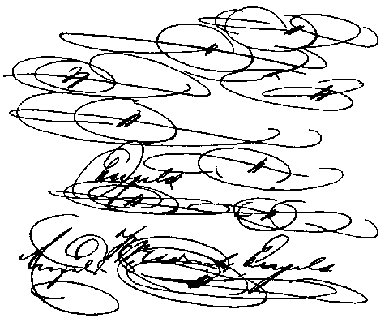

Letters of Frederick Engels
Source: MECW Volume 2, p. 519
Written: 21 December 1840
First published: in the Deutsche Revue, Stuttgart and Leipzig, Bd. 4, 1920
Dear Marie,
I cannot refrain from thanking you for the beautiful cigar case — the only thing wrong with it is that it is not black, red and gold. It accidentally came into my possession already today and was put to use at once. — Here it has been terribly cold, through the whole of December it has been freezing without interruption and it is still freezing. The Weser is frozen from here to Vegesack, four hours from here, which looks most remarkable. Recently some people from Barmen were here, and we had a jolly good time, visited all the taverns, kept the glasses going and at times felt a bit tipsy. Enclosed you will find a demand note [the “demand note” was written in Spanish as a joke by Engels himself] from my former Spanish teacher; if you can understand it I'll make you a present of a new hat. Perhaps there is somebody in your boarding-school who understands so much Spanish, and here the thing is getting in my way. — I must say, I hardly know what to write to you; a sugar refinery has burnt down here, and the Old Man [Heinrich Leupold] will not leave the office, although I am really dying for a cigar.
23rd. Yesterday evening we were having a fencing lesson when the nice news came that there was another fire and this time in Neustadt. We went there out of a sense of duty, and when we got there it was already out. That is what one gets for one’s trouble. You should always stay nicely at home until it is burning under your nose. Mother has sent me for Christmas an order for Goethe’s collected works; I went at once yesterday to fetch the first volumes that have appeared and last night read the Wahlverwandtschaften till midnight with great enjoyment. He is a fellow, Goethe! If you wrote German as he does I would excuse you from all foreign languages. Incidentally, it is quite unnecessary for you to leave a margin when you write to me, the octavo pages are narrow enough as it is, and I will not hear of this comfortable way of writing pages full and not writing much. Please note! says Professor Hantschke.
24th. You will now be in tremendous excitement, I can imagine, and in grand hopes. I am curious what will come of it. You will, of course, acquaint me by the first post with this important proceeding? I shall see that it gets into the newspaper here at once.
Here, in passing, are a few strokes, flourishes and signatures, with which I proved the skill of my hand to my junior, [Wilhelm Leupold] who prides himself on his rectangular strokes.

Dec. 28th. The Weser is now completely frozen over, so that people are driving on it in coaches. I believe one could skate as far as Vegesack, which is five hours by the Weser. In the afternoon all the beau monde goes for walks on it and the ladies slide on the ice so as to be lifted off by the gentlemen, which always gives them great pleasure. The trees look as if they were made of snow, they are so thickly covered with a white crust. — The Pastor’s wife [Mathilde Treviranus] has embroidered a black, red and gold purse for me for Christmas and Marie [Treviranus] has made me a black, red and gold tassel for my pipe, which is smashing. Today we have 9 degrees below freezing-point, what a life! I like nothing better than this cold, ineffective sun which rises over the winter-hard earth. No clouds in the sky, no dirt on the earth, everything as hard and solid as steel and diamond. The air is not so flabby and consumptive as in summer, you feel it now when you go out of doors. The whole town is full of glaciers, people no longer walk, they fall from one street into the other. Now one can’t help noticing that it is winter. I hope that in Mannheim, among other useful accomplishments, you will also learn to skate, so that you don’t come home a shivering, stay-at-home, not-to-be-moved-out-of-doors little lady, which I refuse to stand for. But if you do arrive afraid of the cold I shall tie you on a sleigh, put a burning sponge in the horses’ cars and chase you like that out into the open. Or I'll tie skates under you and carry you out to the middle of the pond and leave you to crawl on your own.
My very dear sister, if my hopes are not disappointed you will get this letter on New Year’s Day. On this holiday, greatly looked forward to by me and you too, I imagine, I wish you everything you desire, since this wish costs me nothing, and hope that your wishes for me will be at least equally Christian. May Mannheim be as much to your liking in the New Year as, to judge by your letters, it was in the old. (This I write in case this letter has first to be censored before it comes into your hands.)
Yours,
Friedrich
Bremen, Dec. 28, 40